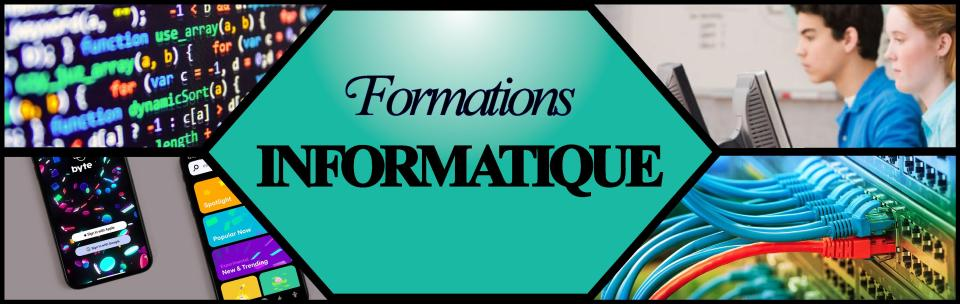
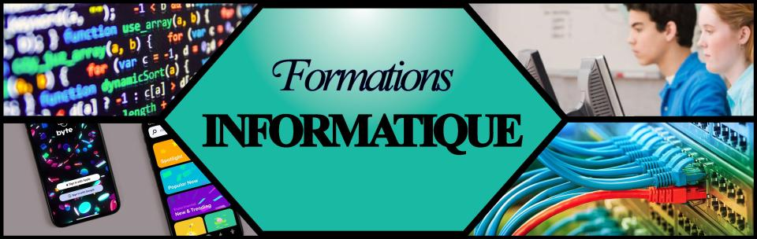

La formation informatique
Les instituts universitaire de technologie
Les Instituts Universitaires de Technologie en France sont répartis sur tout le territoire et sont au nombre de 115, ce qui assure un fort ancrage dans l'environnement économique local et régional. Des rencontres entre directeurs de département des IUT assurent la cohérence nationale de l'enseignement.
L'IUT a une qualité d'enseignement universitaire reconnue et plébiscitée par les entreprises depuis plus de 40 ans, grâce à la mise en place de programmes adaptés à la réalité professionnelle et à la création de diplômes répondant à l'apparition de nouveaux métiers.
Les formations couvrant la plupart des secteurs (secondaire et tertiaire) et proposant la collaboration de professionnels font la force et le succès des IUT, et permettent de fait aux étudiants de trouver un travail dans les 6 mois suivant la délivrance du diplôme.
Cette diversification des diplômes et des formations amène à mettre en place des modes pédagogiques différents, qui conviennent ainsi à un plus grand nombre d'étudiants et de professionnels souhaitant reprendre des études ou faire une validation d'acquis de l'expérience (VAE).
En outre, les IUT, en partenariat avec des universités étrangères, proposent des poursuites d'études à l'étranger, ainsi que des stages.
Les départements informatique à l'IUT
L'enseignement de l'informatique à l'IUT fait une large part à la dimension professionnelle tout en conservant des composantes fondamentales; l'étudiant acquiert ainsi des savoir-faires mais également des connaissances, des concepts de base et des méthodes de travail qu'il sera à même de mettre à profit en situation professionnelle.
Le DUT, diplôme universitaire et professionnel (niveau L2 du schéma LMD, 120 crédits européens):
Les titulaires du DUT en informatique sont des techniciens supérieurs, capables de participer à la conception, la réalisation et la mise en oeuvre de systèmes informatiques. Ils peuvent cependant s'ils le désirent poursuivre leurs études à l'issue de ce diplôme.
La Licence Professionnelle «Systèmes Informatiques et Logiciels» (SIL), diplôme de niveau L3 dans le schéma LMD (grade de Licence, 180 crédits européens): ces pages présentent les licences professionnelles proposées dans les départements informatiques d'IUT.
Les titulaires de la licence SIL sont des spécialistes capables de participer à un projet de développement logiciel et, à terme, d'en prendre la complète responsabilité.
La validation des acquis :
Il est également possible de faire reconnaître son expérience (professionnelle ou non) afin d'obtenir un diplôme, un titre ou un certificat de qualification professionnelle. Vous pouvez visiter le site du gouvernement concernant validation des acquis de l'expérience (VAE).
Programme du DUT Informatique